PPO for BTC/USDT
Methodology, optimisation and evaluation
Project_PPO_All_In_One_Fixed.ipynb
Evaluation: 17 August–17 September 2026
End exclusive · 744 candles · 743 transitions
Research presentation · 28 September 2026
1 / 24
Research question and baseline
Can policy selection improve BTC exposure decisions?
Hourly BTC/USDT observations; nine discrete exposure choices.
Baseline: three PPO networks combined by mean probability.
Optimisation: features, update settings, turnover penalties and aggregation.
Assessment: chronological validation, followed by a fixed evaluation window.
“Selected” means best eligible PPO validation score. It does not mean highest evaluation return.
Source: fixed notebook and captured experiment; all dates UTC.
2 / 24
Why PPO
A categorical actor directly represents the nine action probabilities.
A critic estimates state value to support advantage-based learning.
Clipping, gradient limits and a KL check control policy updates.
Fresh rollouts are reused for a few epochs, then discarded.
A reasonable research choice; no evidence here that PPO is universally best for trading.
Theory: Schulman et al., PPO (2017), https://arxiv.org/abs/1707.06347
3 / 24
Data and chronological windows
Daily closing prices are plotted from the verified hourly dataset. Shaded windows show four 30-day validations and the 31-day evaluation. Date endpoints
are exclusive; all timestamps are UTC.
Source: fixed notebook and captured experiment; all dates UTC.
4 / 24
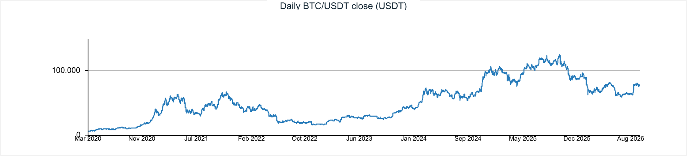
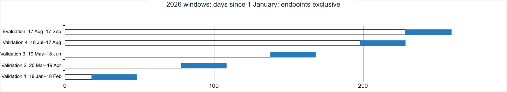
Input | Baseline | Momentum alternatives |
Static market features | 5 | 13 |
Main information | Hourly return, price ratios, relative volume | Multi-horizon returns, volatility, trends, candle shape, relative volume |
Dynamic features | Previous target position and current realised exposure | |
Total input dimensions | 7 | 15 |
State representation
Fit the scaler on each training partition; apply it unchanged to validation and evaluation.
Source: fixed notebook and captured experiment; all dates UTC.
5 / 24
Nine discrete target positions
Position values are target exposures, not buy/sell quantities or a continuous action space. Repeating a target does not force rebalancing in the installed
simulator; realised exposure can drift.
Source: fixed notebook and captured experiment; all dates UTC.
6 / 24
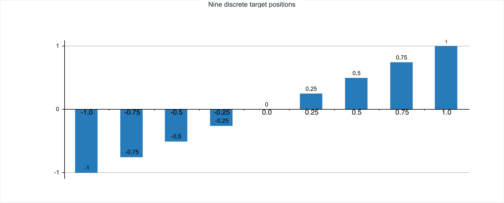
Actor | 7 or 15 inputs → 64 tanh → 64 tanh → 9 logits |
Critic | 7 or 15 inputs → 64 tanh → 64 tanh → 1 value |
Rollout batch | 4 environments × 256 steps = 1,024 transitions |
Update | GAE; normalised advantages; 6 epochs; minibatches of 256 |
Evaluation | Frozen weights; deterministic action selection; no learning |
Network and training architecture
Observation → separate actor and critic networks
Source: fixed notebook and captured experiment; all dates UTC.
7 / 24
Reward and simulation assumptions
rtrain = 100 × [log(Vt+1/Vt) − κ |Δtarget|]
Initial portfolio: 1,000 USDT in cash.
Trading-fee parameter: 0.01%; hourly borrowing parameter: 0.0003%.
Turnover penalty κ shapes learning; it is not an extra portfolio debit.
Reported return comes from simulated portfolio value, not shaped reward.
Costs are incomplete: no spread or slippage; borrowing accumulation has a verified defect.
Source: fixed notebook and captured experiment; all dates UTC.
8 / 24
Candidate | Change | Intended effect |
Momentum | 13 features + entropy + annealing | More market context |
Cautious | Lower rate; tighter clip | Smaller policy updates |
Short horizon | γ = 0.95; λ = 0.90 | Less distant reward dependence |
Turnover / low turnover | κ = 0.0003 / 0.0001 | Fewer target changes |
Exploration | Entropy coefficient 0.03 | More action diversity |
Optimisation hypotheses
These are configuration bundles. Their individual components were not isolated in ablations.
Source: fixed notebook and captured experiment; all dates UTC.
9 / 24
Stage | Fits | Steps per fit | Transitions |
Screening: 7 configs × 4 folds × 1 seed | 28 | 16,384 | 458,752 |
Confirmation: 3 configs × 4 folds × 3 seeds | 36 | 49,152 | 1,769,472 |
Final refit: 1 config × 3 seeds | 3 | 49,152 | 147,456 |
Total | 67 |
| 2,375,680 |
Experimental design
Then compare 2 aggregation rules × 3 candidates × 4 folds.
Seeds: 23, 42, 71. Selection is frozen before final evaluation.
Source: fixed notebook and captured experiment; all dates UTC.
10 / 24
Initial screening results
Each point is one validation fold. Bars are arithmetic means of four fold returns, seed 23, 16,384 training transitions per fit. These are validation results,
not final evaluation returns.
Source: fixed notebook and captured experiment; all dates UTC.
11 / 24
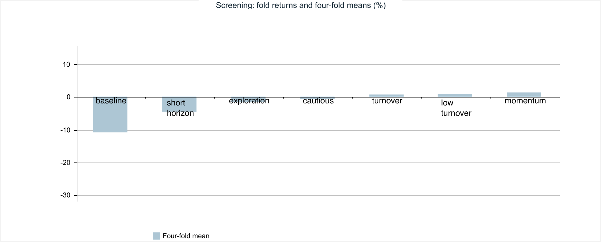
Confirmation reduced confidence in the initial gains
Confirmation refits each candidate from scratch using 49,152 transitions and seeds 23, 42 and 71. Both seed coverage and training budget changed, so
the shift is not a controlled estimate of either effect alone.
Source: fixed notebook and captured experiment; all dates UTC.
12 / 24
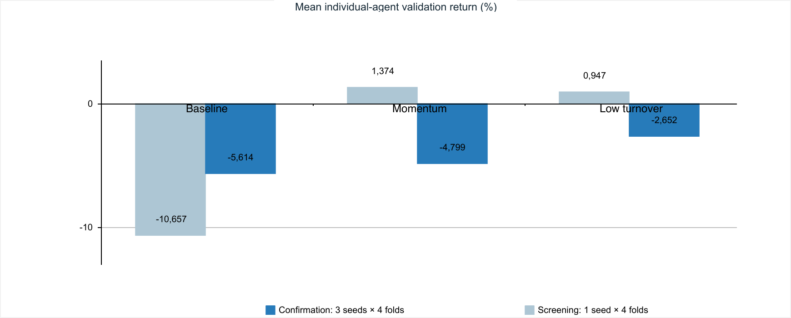
Mean probability and unanimous vote
Baseline: mean probability
Average each action’s probability across the
three networks.
Choose the action with the largest average.
argmaxa meani πi(a | s)
Selected: unanimous vote
Find each network’s most likely action.
Execute only if all three agree exactly; otherwise
choose cash.
All votes equal → common action
Disagreement → cash
Both final policies use the same three baseline network weights.
Source: fixed notebook and captured experiment; all dates UTC.
13 / 24
The validation score selected abstention
Score = mean(log return) − 0.25 × mean(drawdown magnitude) − 0.10 × sample standard deviation(log return). Scores use four ensemble backtests, one
per fold. Cash is shown for context but was excluded from selectable PPO candidates.
Source: fixed notebook and captured experiment; all dates UTC.
14 / 24
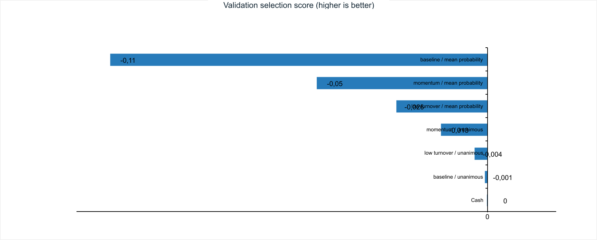
Validation and evaluation had different market patterns
All dates are in 2026 UTC, end exclusive. Each fold has 720 observations and 719 transitions. The selected policy’s fold returns were 0.00%, +0.48%,
−0.24% and −0.09%.
Source: fixed notebook and captured experiment; all dates UTC.
15 / 24
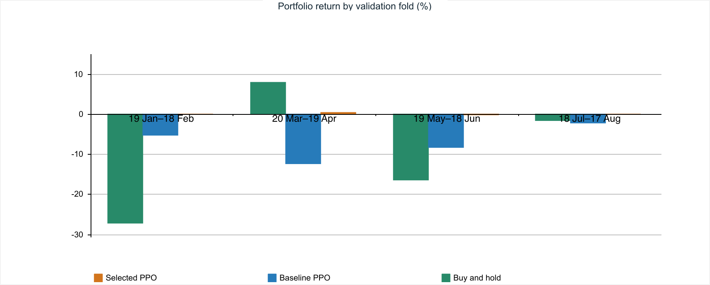
Baseline beat selected PPO during evaluation
Evaluation candle labels: 17 Aug 2026 00:00 through 16 Sep 2026 23:00 UTC. Returns use first-to-last included close, with simulator fees. Borrowing
accounting has a verified limitation; slippage and spread are omitted.
Source: fixed notebook and captured experiment; all dates UTC.
16 / 24
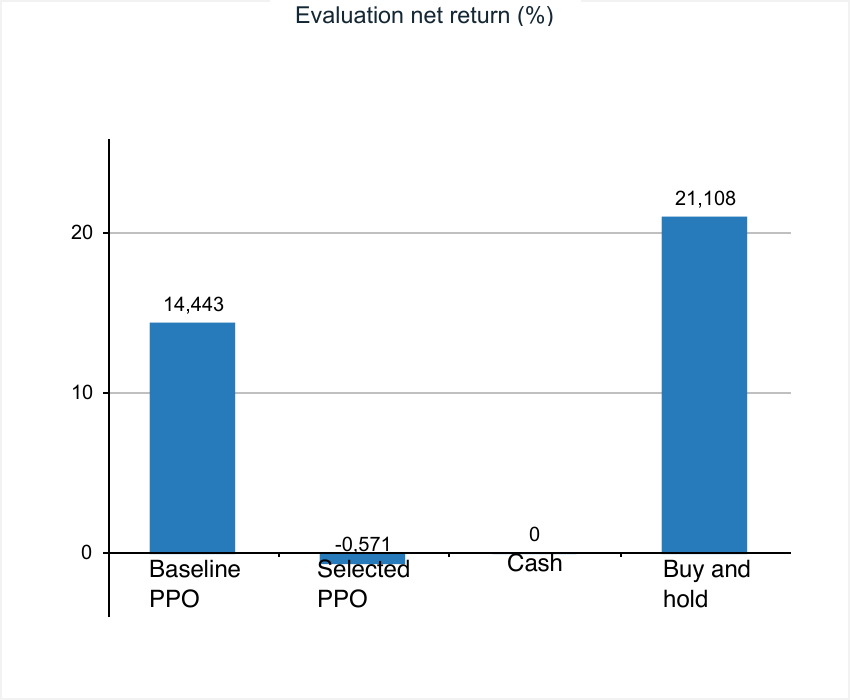
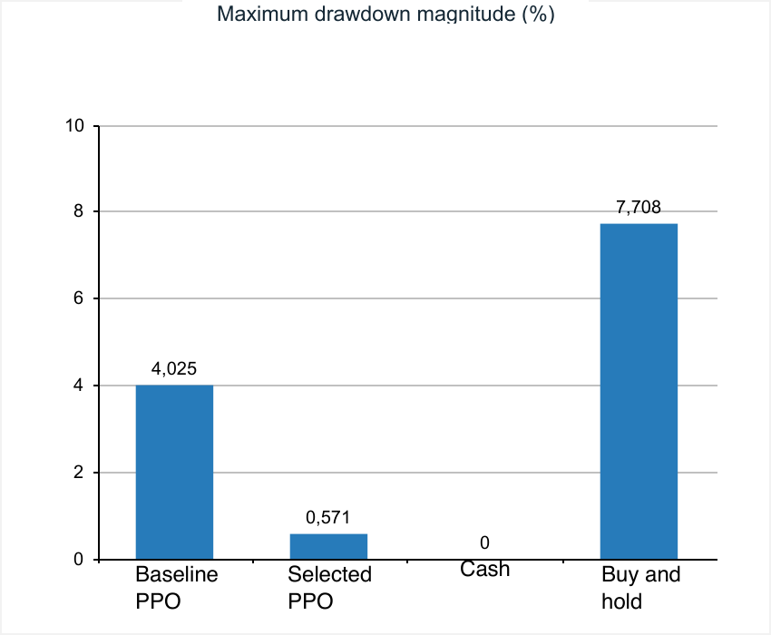
Portfolio paths and drawdowns
All paths start at 1,000 USDT in cash. Selected PPO ends at 994.29; baseline at 1,144.43. Curves are recomputed from the live trained agents and
exactly match the stored experiment traces.
Source: fixed notebook and captured experiment; all dates UTC.
17 / 24
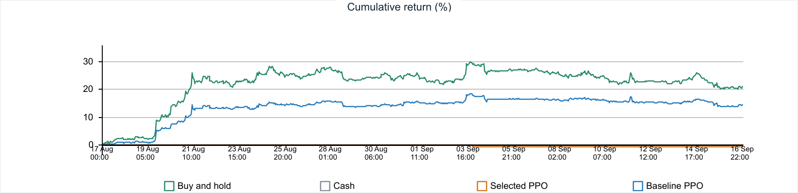
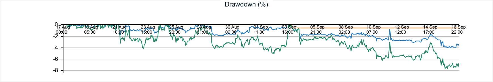
Low drawdown came from almost no market exposure
Direct replay confirms all 742 cash decisions were caused by disagreement between the three models. They unanimously chose +1 only once, producing
one holding interval and two position changes (entry and exit). These are decision frequencies, not capital weights.
Source: fixed notebook and captured experiment; all dates UTC.
18 / 24
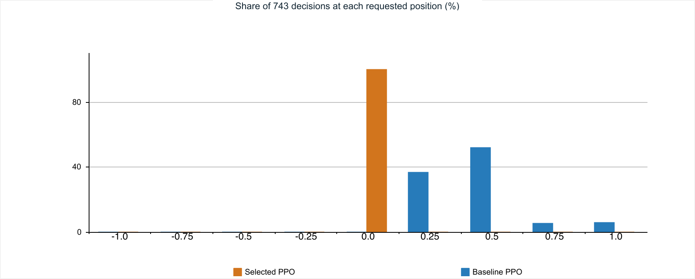
Seed sensitivity remains material
These are the same three fitted networks used by both ensembles. The six notebook rows repeat these three members under two policy labels; they are
not six independent models. An ensemble combines decisions, not realised returns.
Source: fixed notebook and captured experiment; all dates UTC.
19 / 24
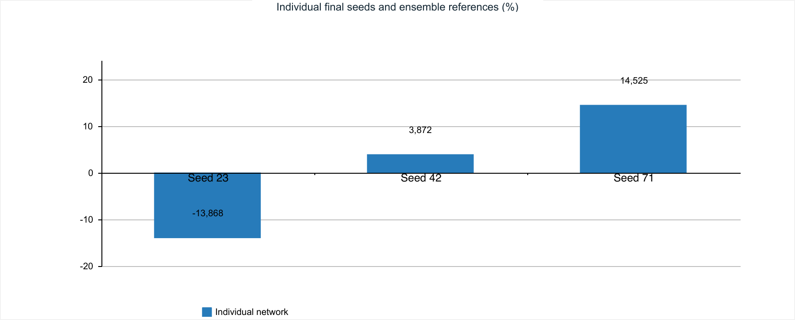
Learning diagnostics do not prove convergence
Final baseline networks: 48 rollout batches × 1,024 transitions = 49,152 per seed; 1,152 minibatch optimiser updates per seed. No KL early stop occurred.
Entropy declines, but noisy critic explained variance does not establish predictive skill or convergence.
Source: fixed notebook and captured experiment; all dates UTC.
20 / 24
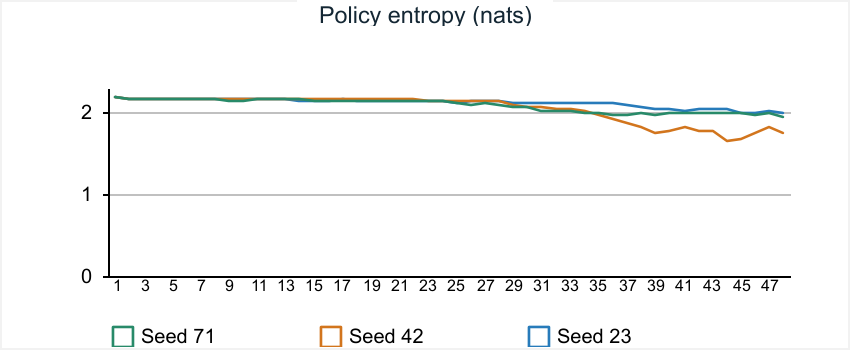
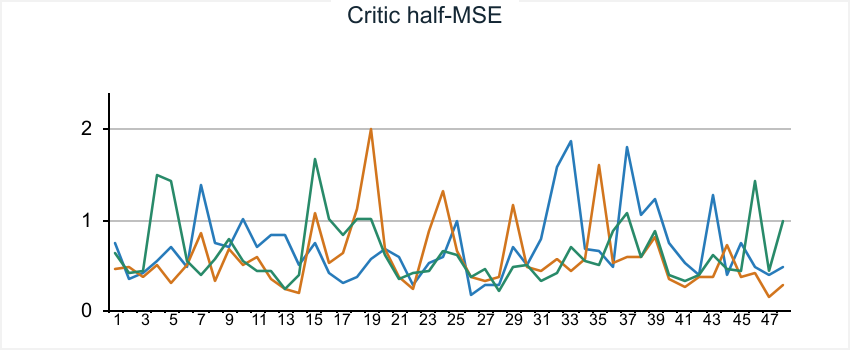
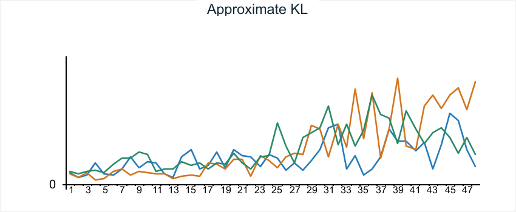
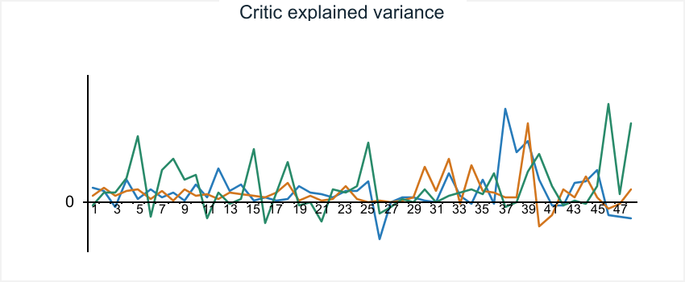
Limitations that affect the conclusion
Financing defect: interest is overwritten rather than accumulated on a held short.
Optimistic execution: same-close trading; no spread, slippage or latency.
Selection risk: only four recent folds; the evaluation month was reused.
Weak independence: ten repeated episodes replay the same deterministic path.
Attribution: bundled changes prevent isolated causal conclusions.
Source: fixed notebook and captured experiment; all dates UTC.
21 / 24
Next experiments: improve credibility before complexity
1. Correct financing and specify rebalancing and liquidation rules.
2. Test feasible execution with measured cost scenarios.
3. Allow cash and buy-and-hold to compete in policy selection.
4. Freeze choices before a new untouched evaluation period.
5. Run matched ablations and test less restrictive ensemble rules.
These are proposed experiments. No improvement from them has been demonstrated yet.
Source: fixed notebook and captured experiment; all dates UTC.
22 / 24
Conclusion
The search reduced risk mainly by choosing cash.
Baseline +14.44%
Selected −0.57%
Buy-and-hold +21.11%
A complete PPO pipeline ran 67 fits with chronological selection.
The selected aggregation improved validation score and reduced activity.
It did not improve evaluation return over baseline or cash.
Robust trading advantage remains unproven.
Source: fixed notebook and captured experiment; all dates UTC.
23 / 24
References and evidence
Primary evidence: the fixed notebook, its live frozen agents, trial tables and hourly portfolio traces.
Schulman et al. Proximal Policy Optimization Algorithms (2017).
https://arxiv.org/abs/1707.06347
Schulman et al. Generalized Advantage Estimation (2015; revised 2018).
https://arxiv.org/abs/1506.02438
Binance public-data documentation.
https://github.com/binance/binance-public-data
Gym Trading Environment documentation and installed version 0.3.5.
https://gym-trading-env.readthedocs.io/en/latest/environment_desc.html
Captured runtime: pandas 3.0.6 · NumPy 1.26.4 · PyTorch 2.2.2 · Gymnasium 1.3.0
24 / 24